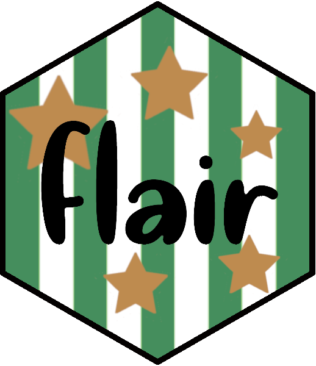

class: center, middle, inverse, title-slide # {flair}: Decorate your source code. ##  ### Kelly Bodwin ### These slides: <strong>kbod.win/talks/useR_2020</strong> --- <style type="text/css"> .remark-slide { background-size: cover; } img { height: 400px; } </style> --- class: center, middle, inverse ## The main idea: -- ### Source code needs highlighting in R Markdown-based presentations -- ### This can be an un-reproducible task --- #### Hey kids, let's learn about boxplots! ggplot(penguins, aes(x = species, y = body_mass_b)) + <mark> geom_histogram() </mark> <!-- --> --- class: center ## Me trying to highlight my code examples for lecture... <img src="C:/Users/kbodwin/Dropbox/Talks-and-Presentations/RStudio_2020/johanna_gif.gif" width="70%" style="display: block; margin: auto;" /> --- class: center, middle ## `install.packages("flair")` ## BUT updated for R 4.0: ## 👉 github.com/kbodwin/flair ### (beware!) --- class: inverse, center # How to add flair to your code <img src="C:/Users/kbodwin/Dropbox/Talks-and-Presentations/RStudio_2020/flair_gif.gif" style="display: block; margin: auto;" /> --- # **Step One:** ## Regular ol' code chunk (with a name) ```` ```{r how_to_pipe, include = FALSE} penguins %>% group_by(species) %>% summarize(mean(body_mass_g)) ``` ```` --- # **Step Two:** ## Reference chunk by name with `decorate` <code class ='r hljs remark-code'><span style='background-color:#ffff7f'>decorate</span>("how_to_pipe") %>%</code> --- # **Step Three:** <img src="C:/Users/kbodwin/Dropbox/Talks-and-Presentations/RStudio_2020/15pieces.jpg" width="70%" style="display: block; margin: auto;" /> --- # **Step Three:** ## Add your flair with `flair_*` functions <code class ='r hljs remark-code'>decorate("how_to_pipe") %>%<br> <span style='background-color:#ffff7f'>flair</span>("%>%") %>%<br> <span style='background-color:#ffff7f'>flair_funs</span>(color = "cornflowerblue")</code> --- # You're done! ```r decorate("how_to_pipe") %>% flair("%>%") %>% flair_funs(color = "cornflowerblue") ``` <code class ='r hljs remark-code'>penguins <span style='background-color:#ffff7f'>%>%</span><br> <span style='color:cornflowerblue'>group_by</span>(species) <span style='background-color:#ffff7f'>%>%</span><br> <span style='color:cornflowerblue'>summarize</span>(<span style='color:cornflowerblue'>mean</span>(body_mass_g))</code> ``` ## # A tibble: 3 x 2 ## species `mean(body_mass_g)` ## <fct> <dbl> ## 1 Adelie NA ## 2 Chinstrap 3733. ## 3 Gentoo NA ``` --- class: inverse, center, middle # FAQ --- # **FAQ:** ### Does this work in `ioslides`, `xaringan`, etc? -- **YES!** Any R-markdown based document. -- ### What happens when you run in console/Rmd source? -- Source code w/flair is previewed in viewer pane. -- ### Does this work with LaTeX knitting? -- Not yet, sorry. --- class: inverse, center, middle <img src="C:/Users/kbodwin/Dropbox/Talks-and-Presentations/Images/favorites.jpeg" width="70%" style="display: block; margin: auto;" /> --- class: center, middle, inverse # Trick 1: # Emphasize small code differences --- ## Original code chunk ```` ```{r geoms, include=FALSE} babynames %>% ggplot(aes(x = Year, y = Count, fill = Gender)) + geom_col() babynames %>% ggplot(aes(x = Year, y = Count, color = Gender)) + geom_line() ``` ```` --- ## flair code chunk ```` ```{r, echo = FALSE} decorate("geoms") %>% flair("_col") %>% flair("fill = ") %>% flair("_line") %>% flair("color = ") ``` ```` --- ## Results <code class ='r hljs remark-code'>babynames %>%<br> ggplot(aes(x = Year, y = Count, <span style='background-color:#ffff7f'>fill = </span>Gender)) +<br> geom<span style='background-color:#ffff7f'>_col</span>()</code> <!-- --> --- ## Results <code class ='r hljs remark-code'>babynames %>%<br> ggplot(aes(x = Year, y = Count, <span style='background-color:#ffff7f'>color = </span>Gender)) +<br> geom<span style='background-color:#ffff7f'>_line</span>()</code> <!-- --> --- class: center, middle, inverse # Trick 2: # Match colors to concepts --- ## Beautiful slide by [@AndrewHeiss](https://twitter.com/andrewheiss) <kbd><img src="https://pbs.twimg.com/media/EVq7NGeXgAMhvOC?format=jpg&name=large" /></kbd> --- ## Flair the text: ```` ```{r, results = "asis", echo = FALSE} "This model has a response variable, two predictors, and an interaction term." %>% flair("response variable", color = "deeppink") %>% flair("predictors", color = "cornflowerblue") %>% flair("interaction term", color = "orange") %>% flair_all(before = "<h4>", after = "</h4>") %>% cat() ``` ```` --- ## Flair the code: ```` ```{r lm, include = FALSE} mod <- lm(Count ~ Gender + Year + Gender:Year, data = babynames) summary(mod) ``` ```` ```` ```{r, echo = FALSE} decorate("lm") %>% flair("Count", color = "deeppink") %>% flair("Gender:Year", color = "orange") %>% flair_rx("Gender |Year ", color = "cornflowerblue") ``` ```` --- ## Results <h4>This model has a <span style='color:deeppink'>response variable</span>, two <span style='color:cornflowerblue'>predictors</span>, and an <span style='color:orange'>interaction term</span>.</h4> <code class ='r hljs remark-code'>mod <- lm(<span style='color:deeppink'>Count</span> ~ <span style='color:cornflowerblue'>Gender </span>+ <span style='color:cornflowerblue'>Year </span>+ <span style='color:orange'>Gender:Year</span>, data = babynames)<br><br>summary(mod)</code> ``` ## ## Call: ## lm(formula = Count ~ Gender + Year + Gender:Year, data = babynames) ## ## Residuals: ## Min 1Q Median 3Q Max ## -625.27 -128.36 -13.67 155.13 943.86 ## ## Coefficients: ## Estimate Std. Error t value Pr(>|t|) ## (Intercept) 837.0953 3555.4360 0.235 0.814 ## GenderM 2769.6513 4980.9342 0.556 0.579 ## Year -0.1064 1.7965 -0.059 0.953 ## GenderM:Year -1.6660 2.5171 -0.662 0.509 ## ## Residual standard error: 337.2 on 147 degrees of freedom ## Multiple R-squared: 0.3876, Adjusted R-squared: 0.3751 ## F-statistic: 31.02 on 3 and 147 DF, p-value: 1.357e-15 ``` --- class: center, middle, inverse # Trick 3: # Masking --- ## A class quiz: <code class ='r hljs remark-code'>library(ggplot2)<br><br>babynames %>%<br> ggplot(aes(y = <span style='background-color:#ffff7f'> </span>, x = <span style='background-color:#ffff7f'> </span>, color = <span style='background-color:#ffff7f'> </span>)) +<br> geom<span style='background-color:#ffff7f'> </span>() +<br> geom<span style='background-color:#ffff7f'> </span>() +<br> theme<span style='background-color:#ffff7f'> </span>()</code> <!-- --> --- ## The flair chunk: ```` ```{r, echo = FALSE} decorate("plot") %>% flair_rx("ggplot2?", background = "pink") %>% mask("Count") %>% mask("Year") %>% mask("Gender") %>% mask("point") %>% mask("line") %>% mask("light") ``` ```` (Notice: `flair_rx()`) --- class: inverse, center, middle # Find the package: ## `install.packages("flair")` ## **github.com/kbodwin/flair** # Find me: ## **@KellyBodwin** ## www.kelly-bodwin.com --- class: middle, center, inverse # **Under the Hood:** For the devs ## How it works ## What you can help with --- # How `flair` works ## `with_flair()` object * `decorate()` creates a `with_flair()` object * `with_flair()` is a new S3 class for the package. + structure: list, output of `knit_child()` + `print` method: prints as-is --- # How `flair` works ## `decorate()` The `decorate()` function... * tracks the current state of R Markdown (i.e. knitting versus interactive) * tracks global options and chunk-specific options * does a lot of regex searching to find `flair` chunks * knits the `flair` chunks individually, using appropriate options --- # How `flair` works ## `flair()` The `flair()` functions... * Find the source code elements in the `with_flair()` object. * Wrap html tags around the appropriate text. * Return a `with_flair()` object. --- # How `flair` works ## The whole routine 1. Pre-knit the "child" chunks into html. 2. Find flair-ed text and wrap html. 3. Print as-is. --- class: center, middle, inverse # How you can help -- ## Syntax highlighting! --- # Syntax highlighting Ordinary knitting process: * R markdown/knitr runs code; stores source text and output in list. -- * Pandoc process markdown and "fences" source code: ```` ```r ``` ```` -- * JavaScript `highlight.js` processes source text to add syntax highlighting. --- # Syntax highlighting **What this means:** Syntax highlighting happens *on the browser end*. -- Flair happens at the **knitting step**. -- Can we somehow apply both to the source code? -- <img src="C:/Users/kbodwin/Dropbox/Talks-and-Presentations/Images/idk.gif" width="70%" style="display: block; margin: auto;" /> --- class: center, middle, inverse # Find the package: ## `install.packages("flair")` ## **github.com/kbodwin/flair** # Find me: ## **@KellyBodwin** ## www.kelly-bodwin.com